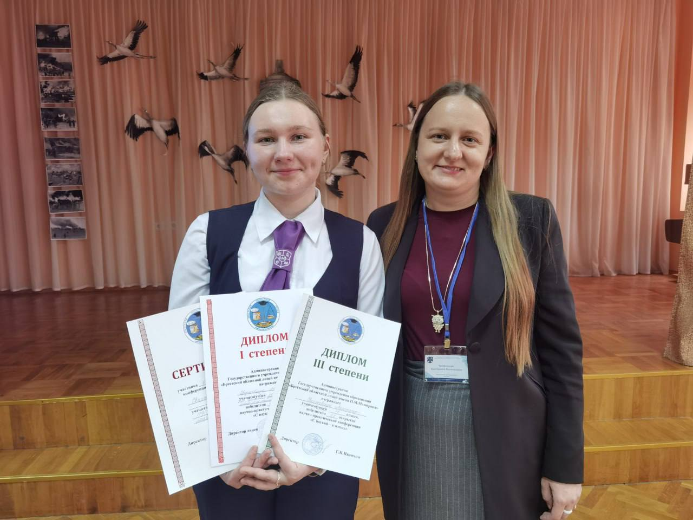
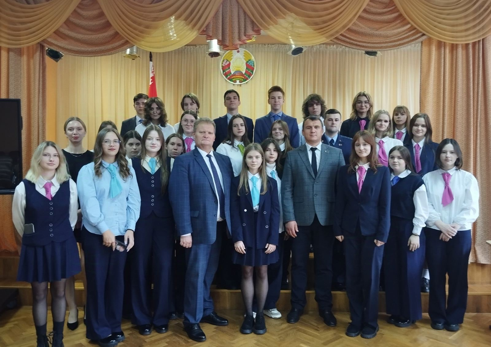

При пожаре в доме(квартире)

Мастер слова 2025
06.05.2025 состоялся открытый университетский конкурс ораторского мастерства "Мастер слова-2025", посвященный 80-летию БрГУ имени А.С.Пушкина
Диплом 2 степени завоевала Данилюк Елизавета, учащаяся 10 "Б" класса (руководитель-Бурина Елена Анатольевна, учитель русского языка и литературы)
Диплом 3 степени завоевал Лакиза Антон, учащийся 11 "В" класса (руководитель-Бурина Елена Анатольевна, учитель русского языка и литературы)
Поздравляем наших учащихся и Елену Анатольевну и желаем дальнейших побед и успехов в выбранном направлении!

По итогам XX открытой региональной научно-практической конференция "С наукой - в жизнь" 15 научно-исследовательских работ наших лицеистов были отмечены дипломами
Диплом I степени:
Братчук Ангелина (научный руководитель - Рубец Р.С.)
Свиржевская Анастасия (научный руководитель - Трофимчук Е.В.)
Климук Александра (научный руководитель - Ленивко С.М.)
Диплом II степени:
Доценко Ефим, Румас Сергей (научный руководитель - Белоусова Е.С.)
Булавин Кирилл, Скороход Ангелина (научный руководитель - Жигаревич Ю.К.)
Ананьева Полина (научный руководитель - Бурина Е.А.)
Ганчук Анна (научный руководитель - Галушко Н.Н.)
Борецкая Анна, Давидюк Полина (научный руководитель - Новосельчан Е.В., Самосюк И.В.)
Косенкова Эмилия (научный руководитель - Новосельчан Е.В.)
Мойсеюк Анна, Веремейчук Екатерина (научный руководитель - Евтушенко А.Г.)
Диплом III степени:
Гаранкина Анна (научный руководитель - Бурина Е.А.)
Гаранкина Анна (научный руководитель - Новосельчан Е.В.)
Ананьева Полина (научный руководитель - Алисова А.Н.)
Свиржевская Анастасия (научный руководитель - Альхименко А.А.)
Белый Иван (научный руководитель - Ленивко С.М.)
Поздравляем начинающих исследователей и их научных руководителей! Лицей вами гордится!



О нас пишут
Больш за 100 навучэнцаў школ, гімназій, ліцэяў і ўніверсітэтаў краіны сабрала ХХ адкрытая навукова-практычная канферэнцыя «З навукай — у жыццё» ў Брэсце, паведамляе карэспандэнт «Настаўніцкай газеты».

ХХ открытая региональная научно-практическая конференция "С наукой - в жизнь" прошла в Брестском областном лицее имени П.М.Машерова
Работа конференции проходила в 12 секциях, где состоялась защита исследовательских работ и проектов.
В юбилейном году результаты своего труда презентовали 24 учреждения образования со всей республики.
Всего на конференции было представлено 98 исследовательских работ и приняли участие более 120 учащихся.
Больше всего работ было представлено в секции "Язык, культура, современность", "Мир в зеркале иностранного языка (английский)", "Вопросы географии и экологии", "Актуальные вопросы информатики". Впервые в истории конференции были представлены работы в секции китайского языка.


День открытых дверей
17 мая 2025 года в Государственном учреждении образования «Брестский областной лицей имени П.М.Машерова» пройдет День открытых дверей.
Начало в 11.00.
Приглашаются учащиеся 9-х классов и их законные представители.

Научно-практическая конференция «С наукой – в жизнь»

Семинар «Формирование основ финансово грамотного поведения учащихся»
Новосельчан Е.В., учитель истории и обществоведения высшей квалификационной категории, приняла участие в онлайн семинаре «Формирование основ финансово грамотного поведения учащихся», организованным учреждением образования «Могилевский государственный областной институт развития образования».
Семинар собрал множество участников из разных учебных заведений и стал отличной возможностью расширить знания в данной области. На семинаре были рассмотрены вопросы формирования финансовой грамотности учащихся, предложены практико-ориентированные задания для развития финансовой грамотности учащихся, белорусская модель развития финансовой грамотности детей и молодежи: матрица финансовых компетенций учащихся.
Расписание платных подготовительных курсов
19.04.2025 состоятся занятия платных подготовительных курсов для абитуриентов:
по математике (10.40, кабинет 6) (для тех, кто выбрал физику)
по английскому (11.30, кабинет 3 )
по химии (11.30, кабинет 1)
«Информационные технологии»
Итоги V городского конкурса проектных и исследовательских работ учащихся «Дерзай мыслить» (г. Санкт-Петербург).
Дипломом 1 степени отмечена работа Булавина Кирилла, учащегося 11«В» класса ГУО «Брестский областной лицей имени П.М.Машерова» и Кудан Татьяны из УО «Национальный детский технопарк». Научные руководители – Жигаревич Юрий Константинович, учитель информатики ГУО «Брестский областной лицей имени П.М.Машерова» и Дубатовка Владислав Витальевич, заведующий лабораторией «Робототехника»УО «Национальный детский технопарк».
Дипломом 2 степени отмечена работа Скороход Ангелины, Булавина Кирилла, учащихся 11 «В» класса ГУО «Брестский областной лицей имени П.М.Машерова», научный руководитель – Жигаревич Юрий Константинович, учитель информатики
ГУО «Брестский областной лицей имени П.М.Машерова».
Итоги заключительного этапа республиканской олимпиады
Итоги заключительного этапа республиканской олимпиады по учебным предметам
- Томкович Александр, учащийся 11 «Б» класса, - диплом III степени (учебный предмет «География», учитель - Трофимчук Екатерина Васильевна);
- Попко Маргарита, учащаяся 11 «Е» класса, - похвальный отзыв (учебный предмет «Белорусский язык» и «Белорусская литература», учитель - Киргинцева Людмила Юрьевна);
- Шиляев Андрей, учащийся 11 «В» класса, - похвальный отзыв (учебный предмет «Физическая культура и здоровье», учитель – Дубенецкий Олег Борисович).
Поздравляем победителей и желаем успехов в дальнейшем!


«Информационные технологии»
Подведены итоги Республиканской конференции учащихся учреждений общего среднего образования «Мой первый шаг в науку», организованной УО «Белорусский государственный технологический университет».
В подсекции «Информационные технологии» дипломом 1 степени отмечена работа Булавина Кирилла и Скороход Ангелины (научный руководитель - Жигаревич Ю.К., учитель информатики высшей квалификационной категории)Поздравляем Кирилла, Ангелину и Юрия Константиновича с победой! Желаем дальнейших успехов, новых побед, уверенности в себе и своих силах!

День открытых дверей
День открытых дверей
22 марта 2025 года (суббота) Брестский областной лицей приглашает учащихся 9-х классов и их родителей на День открытых дверей. Начало – 11.00.
14 ноября в Брестском областном лицее имени П.М.Машерова прошел «круглый стол»
14 ноября в Брестском областном лицее имени П.М.Машерова прошел «круглый стол», посвященный вопросам профилактики правонарушений и наркомании среди несовершеннолетних. С обучающимися 10-х классов лицея встретились: старший помощник прокурора г. Бреста Дубешко Татьяна Владимировна, участковый инспектор по делам несовершеннолетних Новик Юлия Сергеевна, судья суда Ленинского района г.Бреста Калина Святослав Игоревич. Татьяна Владимировна Дубешко, ссылаясь на статьи Уголовного кодекса Республики Беларусь (ст. 327-332 УК РБ, ст. 328 УК РБ, ст. 168 УК РБ), проинформировала об ответственности за совершаемые несовершеннолетними правонарушения. Законом Республики Беларусь «О массовых мероприятиях в Республике Беларусь» четко определен порядок проведения инициатив, как собрания, митинги, уличные шествия, демонстрации и пикетирование. Любое несоблюдение установленных требований влечет административную либо уголовную ответственность. Юлия Сергеевна Новик предложила участникам круглого стола просмотр видеоролика, в котором показана судьба подростка-правонарушителя. Итоги «круглого стола» были подведены судьей Святославом Игоревичем Калиной. Он квалифицированно ответил на ряд разноплановых вопросов лицеистов.


09.10.2024 на базе ГУО «Брестский областной лицей имени П.М. Машерова» состоялось выездное судебное заседание
09.10.2024 на базе ГУО «Брестский областной лицей имени П.М. Машерова» состоялось выездное судебное заседание по обвинению гражданина К., который совершил преступление, предусмотренное частью 1 статьи 328 УК Республики Беларусь. Ребята увидели как проходит судебное заседание, при этом подчиняясь требованиям поведения в зале судебного заседания! После процесса с ребятами состоялся «живой» разговор, в ходе которого поднимались различные правовые темы. Старший помощник прокурора г. Бреста Ф.С. Лешок пояснил: «Профилактика преступлений среди несовершеннолетних, совершаемых ими или над ними, является приоритетной задачей социального направления политики государства. Она включает в себя воспитательные, правовые, организационные и другие меры воздействия, благодаря которым выявляются и ликвидируются обстоятельства и условия, приводящие к совершению правонарушений. Выездное судебное заседание на базе лицея является влажной составляющей профилактической работы и работы по правовому просвещению молодежи. Уверен в том, что ребята сделают для себя правильные выводы из судебного заседания, а возможно в будущем свяжут свою профессиональную деятельность с правоохранительной системой».
